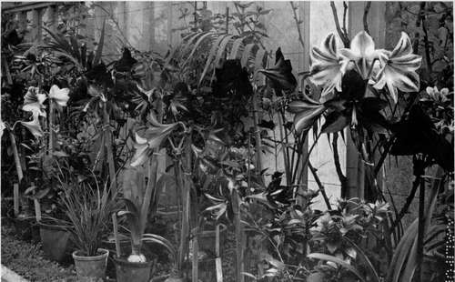
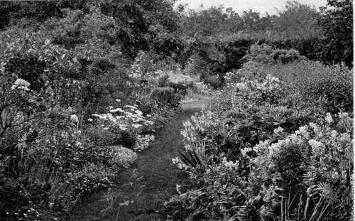

Collecting And Making New Varieties. Part 2
Description
This section is from the book "What England Can Teach Us About Gardening", by Wilhelm Miller. Also available from Amazon: What England Can Teach Us About Gardening.
Collecting And Making New Varieties. Part 2
Just to illustrate what one amateur can do, take the case of the Shirley poppies. All the Shirley poppies in the world are the descendants of one wild poppy which was saved by an English clergyman in 1880. In about ten years he had secured practically all the dainty colours and markings we know to-day, and had succeeded in eliminating all trace of black or purple from the flower. Then he gave (he did not sell) the product to the world, and for twenty years he has had the pleasure of knowing that Shirley poppies are grown and loved in every good garden the world over. That was "fun." The same sort of thing has been done over and over again, and it need never involve any painful publicity, such as Mr. Burbank has to endure. For example, most people do not know who originated the Shirley poppies, viz., the Rev. W. Wilks.
Again, the daffodil (which is the most popular bulbous flower in England) has been improved chiefly by amateurs. Yet it takes about seven years from seed to flower and eight years more to propagate enough bulbs to distribute — fifteen years in all to produce a new variety! We Americans do not, as a rule, know where we shall be living fifteen years from now. That's where the English clergyman has the advantage over us. But his advantage is usually much exaggerated. For any renter can arrange with his landlord for the removal of his seedlings. Even if the bulbs cannot be touched when the family leaves, they may be safely left till the proper time for transplanting. And the idea of waiting fifteen years for a new variety is a bogie that has no terrors for an experienced gardener. You do not hold your breath all that time. A thousand seedlings will generally occupy only one bed, or a single corner. The rest of the garden is hardly devoid of interest all those years.
A COLLECTION OF AMARYLLIS OR HIPPEASTRUM - GORGEOUS FLOWERS SIX INCHES ACROSS IN BRILLIANT SHADES OF RED, OFTEN MARKET WITH GREEN, AND SOMETIMES NEARLY WHITE. See page 116.
I dare say some of my readers will be intensely disappointed when I say there is nothing miraculous in the whole process. Mr. Wilks tells us that there was no hybridization involved in the production of the Shirley poppies — only selection. He merely found one poppy that had a white edge, sowed all the seeds of that plant and, out of two hundred plants, got four or five that had edged flowers. He saved the seeds of these and kept on, sowing and saving, until all the colours came of their own accord. That is the way nine tenths of all the progress has been made with grains, fruits, and vegetables. Nature produces the good things and we merely save them. If you should call Mr. Wilks a "wizard" he would have a right to be deeply offended, for no man likes to have people think him a charlatan.
But even the act of hybridization is shockingly simple. You take a little pollen from one species of flower and put it on the stigma of another flower of a different species. If you are very lucky you will get some good seeds. The rest is the same story over again — pollinating, seed sowing, throwing away the worthless and saving the best. To suppose that Mr. Burbank, or any other plant breeder, has secret methods or superhuman skill is childish. The only reason people think so is that Mr. Burbank has been exploited by newspaper writers and indiscreet friends who know nothing about gardening. Every plant breeder whose work I have seen knows some facts that no one else knows, and he has also refined certain methods. But so has every glue manufacturer and shirt stitcher. A hundred years ago gardeners tried to keep the art of grafting fruit trees a trade secret, but it is in every book now. Nothing of the first importance in horticulture can be kept secret nowadays. No professional possesses methods or skill that any persistent amateur may not attain.
Indeed, the amateur has certain advantages over the seedsmen and nurserymen, who produce so many novelties. As a rule, an amateur has more time and freedom, while the tradesman has to let many opportunities pass, or even suffer his seedlings to die of neglect.
Again the amateur can usually attack the work with freshness, whereas the tradesman's imagination is fatigued by mere thoughts about selling plants. In the third place, the amateur has a keener appetite for books. When a man who gets his living by growing plants goes home he is generally too tired to study the scientific side of gardening. But to a man who sells stocks all day, the plant world offers a rest and change. Now, imagination and study are at least three fourths of the battle. The rest is only technique or routine. Plant breeding is a very poor business, but as a lifelong hobby it is perfect.
Every beginner of to-day will naturally wish to copy Mr. Burbank's methods, because our newspapers tell us he has "done more for mankind than all the plant breeders who have ever lived." But this is only American "hot air." If you wish to measure a man's work by millions of dollars, consider the vast beet-sugar industry of the world, which is chiefly due to Vilmorin's work in increasing the sugar content of the beet. Or take our biggest crop — Indian corn (worth #1,615,000,000 last year), and consider the work of Hopkins and others in breeding maize. Or take Hays's work with wheat. Any of these might be figured as more important to humanity than all of Burbank's work. Again, the newspapers fail to mention that many of the famous Burbank things Mr. Burbank never pretended to "create." He merely bought and introduced them like any other nurseryman. He would be the last man to contend that such disseminations were to be compared with the steady output, for half a century or more, of the great foreign houses, such as Haage and Schmidt, Benary, or Vilmorin, or any one of half-a-dozen big seed houses in the East that you know. Even the original Burbank boomer, Professor Wickson, once wrote me that on the Pacific Coast, where Bur-bank's plants do best, his work had not affected commercial horticulture to the extent of 1 per cent, of the value of horticultural crops. All this is no reflection against Mr. Burbank — only against the newspapers. Mr. Burbank is a great man. It is not his fault that his introductions are of trifling value in the East. Climate is responsible for that.
ONE OF THE PRETTIEST AND MOST INNOCENT FORMS OF COLLECTING - A BORDER OF HARDY PERENNIAL FLOWERS. HERE ONE MAY INDULGE A PASSION FOR RARE PLANTS, BUT COMPLETENESS IS IMPOSSIBLE. AND IS NOT PICTORIAL EFFECT BETTER THAN COMPLETENESS. See page 36.
Continue to:
- prev: Chapter XII. Collecting And Making New Varieties
- Table of Contents
- next: Collecting And Making New Varieties. Part 3
Tags
garden, flowers, plants, England, effects, foliage, gardening